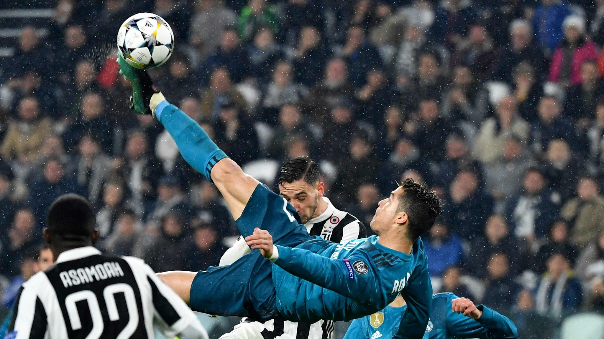

the person who broke the law of gravity
Ronaldo’s highest jump measures 2.93m, recorded against Manchester United while playing for Real Madrid in the 2012-13 UEFA Champions League.Cristiano Ronaldo is arguably one of the best football players of all time and a big part of his success can be credited to his athletic ability, which has often been termed ‘superhuman-like’.During his formative years with Sporting Lisbon and first few years at Manchester United, Cristiano Ronaldo’s aerial ability was average at best. now he has scored 908senior career goals for club and country.
|  |
Ronaldo executed a remarkable bicycle kick, defying gravity to connect with the ball soaring at a height of 2.3 meters. Meanwhile, Ronaldo's body hovered 1.4 meters above the lush green grass field and celebrated with a suii |
One of the world's most marketable and famous athletes, Ronaldo was ranked the world's highest-paid athlete by Forbes in 2016, 2017, and 2023, and the world's most famous athlete by ESPN from 2016 to 2019. Time included him on their list of the 100 most influential people in the world in 2014. Ronaldo is most popular sportsperson on social media, he counts over 1 billion total followers across Facebook, Twitter, YouTube and Instagram, making him the first person to achieve that feat. In 2020, Ronaldo was named to the Ballon d'Or Dream Team and he is the first footballer and the third sportsman to earn US$1 billion in his career.
|
- Sporting Lisbon
- Manchester United
- Real Madrid
- Juventus
- Return to Manchester United
- Al Nassr present